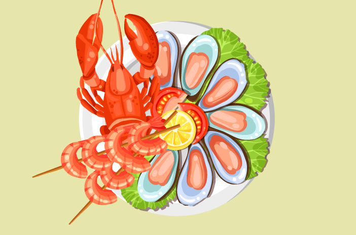

Kurangi Plastik Sekali Pakai
Bawa tas belanja, botol, dan wadah makan sendiri. Tolak sedotan dan kantong plastik sekali pakai untuk mencegah sampah plastik berakhir di laut langsung dari sumbernya.
Pilah Sampah Rumah Tangga
Pisahkan sampah organik, anorganik, dan residu. Setor sampah daur ulang ke bank sampah atau TPS3R, hal ini mengurangi beban TPA dan mencegah sampah bocor ke saluran air.


Pilih Seafood Berkelanjutan
Pilih hasil laut bersertifikasi ramah lingkungan (MSC/ASC). Hindari hasil tangkapan yang merusak ekosistem demi menjaga populasi ikan dan melindungi ekosistem terumbu karang.
Ikut Aksi Bersih Pantai
Bergabung dengan komunitas untuk aksi beach clean-up sambil mencatat jenis sampah untuk mengurangi sampah pesisir secara langsung dan menyediakan data pencemaran.

Sebarkan Edukasi
Bagikan informasi edukatif di media sosial dan komunitas. Ajak orang lain memulai kebiasaan ramah lingkungan sehingga membentuk kesadaran kolektif dan mendukung kebijakan ramah laut.